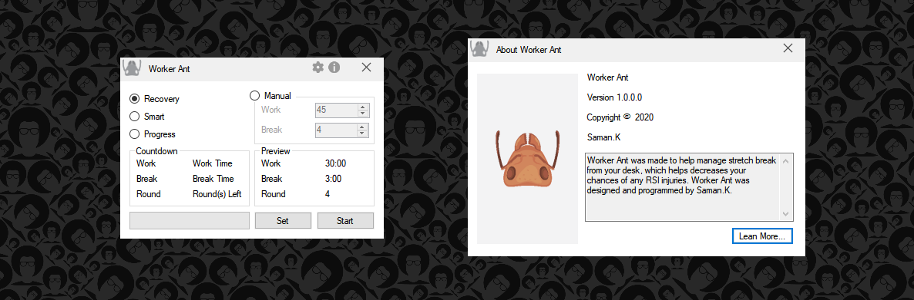

Worker Ant

About
The Worker Ant is an application that lets you organize your managed stretch break from the desk. Worker Ant helps you decrease the chances of work-related physical/mental stress and RSI injuries (Repetitive strain injury). Having short and regular stretch breaks not only helps you to increase your productivity, but it also can help you to step back and reorganize your thoughts. By using Worker Ant it's easier to decrease injuries at your office so you can be comfortable and enjoy your work more than ever.Worker Ant is a fully customizable program, by clicking on the gear icon on the top right corner, you can open up the settings window. In the settings window, you can easily optimize the options to suit your workflow (e.g. by changing the number of rounds, you can plan your upcoming hours).
Worker Ant is an open-source program that was developed with C# and it is the new and improved successor to Safety break. The development of this project will be continued.
- Latest update. version 2.0.2.0 01/12/2020.
Photos

Worker Ant class diagram.

Simple View. All the functionality in a simple lay out.

The break window with Recommend Stretches setting turned on.

Settings window.

Worker Ant can be accessed by using the right-click on the Worker Ant icon.

About window.